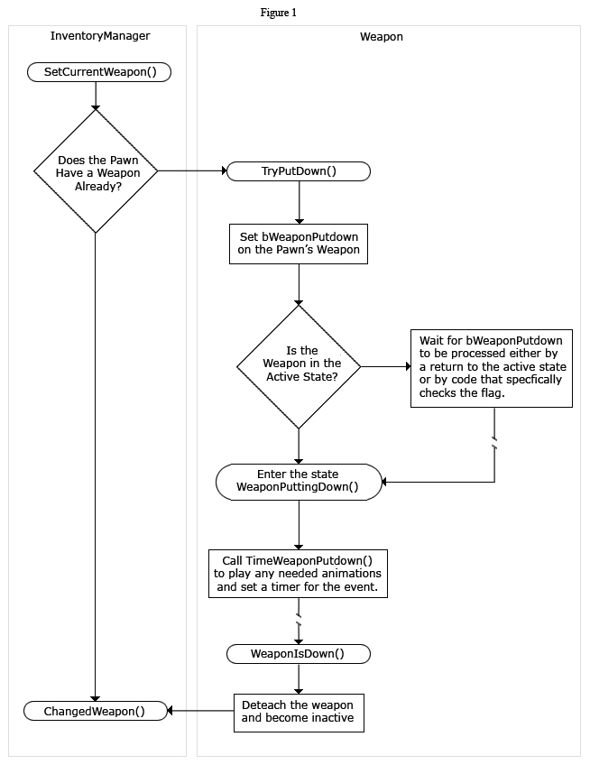

UDN
Search public documentation:
WeaponsTechnicalGuide
日本語訳
中国翻译
한국어
Interested in the Unreal Engine?
Visit the Unreal Technology site.
Looking for jobs and company info?
Check out the Epic games site.
Questions about support via UDN?
Contact the UDN Staff
中国翻译
한국어
Interested in the Unreal Engine?
Visit the Unreal Technology site.
Looking for jobs and company info?
Check out the Epic games site.
Questions about support via UDN?
Contact the UDN Staff
UE3 Home > Gameplay Programming > Weapon System Technical Guide
Weapon System Technical Guide
Overview
Inventory
Inventory Management for Weapons
A Weapon is a child of Inventory, so there are two ways for it to end up in a pawns inventory. It's either given to the pawn directly using the Pawn.GiveWeapon() function or it's assigned to the pawn via a DroppedPickup or PickupFactory actor. DroppedPickups are actors that get created when a weapon is placed in the world and represents the Weapon's physical presence. They are created when a player throws out an item (either intentionally or upon death) in the Inventory.DropFrom(). The PickupFactory actor usually represents the actor placed in a map by a designer. These actors handle the task of deciding if there is an inventory item to give and are responsible for its state in the world. Both the DroppedPickup and the PickupFactory take an existing Inventory item and give it to a pawn. This is perform through the Item.GiveTo() function. This function tells the InventoryManager to add this item to a pawn's inventory via the InventoryManager.AddInventory() function. The second method for giving a weapon to a pawn is through Pawn.GiveWeapon(). This is a helper function that allows non-physical actors (such as the GameInfo or a Mutator) to easily give a weapon to a pawn without having to spawn one itself. It does this by calling the InventoryManager.CreateInventory() passing in the class of the weapon to create. Once your weapon has been given to a pawn, you will need to activate it before it can be used. Typically, activation either comes via user input, typically through the PlayerController.NextWeapon() or PlayerController.PrevWeapon() and InventoryManager.SwitchToWeaponClass() exec functions. These functions perform some logic and when a new weapon is decided upon, call InventoryManager.SetCurrentWeapon(). SetCurrentWeapon() is the main starting point for activating a weapon. It takes 1 parameter, DesiredWeapon which should be a reference to the weapon you want to activate and it should always be called from a local client. Once called, it initiates the chain of code that causes the current weapon to be put down (returned to inventory and deactivated). Figure 1 gives a visual overview of how the system works.  The InventoryManager uses the PendingWeapon property to determine which weapon to switch to when the putdown sequence is finished. SetCurrentWeapon() sets the property and then tells then calls Weapon.TryPutDown(). This function initiates the deactivation of the weapon. Weapon.TryPutDown() should attempt to change in to the WeaponPuttingDown state. If it's not a good time, the weapon sets the bWeaponPutDown flag property. This property is checked in most transitions to see if a put down has been requested. If TryPutDown() is successful in either entering the WeaponPuttingDown state or at setting the bWeaponPutDown flag, it should return true. Other it returns false. If the attempt at putting the weapon down is successful, SetCurrentWeapon() calls ServerSetCurrentWeapon() to initiate the process on the server. This process is nearly an identical to that in SetCurrentWeapon(), however, two things need to be considered. First, ServerSetCurrentWeapon() assumes that the TryPutDown() succeeded on the client. Second, it has to take in to account listen servers and restricts the server-side calling of TryPutDown() if this InventoryManager is locally controlled. All of the above assumes that there is an existing weapon. If not, TryPutDown() is skipped and control is passed directly to ChangedWeapon(). Before we look ChangedWeapon(), it's important to look at the WeaponPuttingDown and the other weapon states. There are six important states to a weapon. They are:- Inactive - Typically, a weapon is in the inactive state when it's not in use. By default, this means the weapon has been hidden and it will no longer get StartFire()/EndFire() events.
- Active - When a weapon is in hand, but not firing it is in the active state. A call to StartFire() from this state initiates the firing sequence.
- WeaponEquipping - When you first activate a weapon (by calling it's Activate() function) it will enter the WeaponEquipping state. Here it should play any "bring up" animations and effects. The time in which it takes to become active is controlled by TimeWeaponEquipping()
- WeaponPuttingDown - This states defines a weapon as it's being put down and deactivated. It's typically entered from the TryPutDown() function or by a delayed check of bWeaponPuttingDown. Like WeaponEquipping, it should play any needed animations and effects and time the action using TimeWeaponPutDown().
- PendingClientWeaponSet - This is a special state that will only ever be entered in to on the client. A weapon enters this state when it's been activated, but it's initial and important information has not yet been replicated (such as instigator or owner). Once in this state, the weapon will set interval check to see that these values have come in. At that point, it will continue to the WeaponEquipping state.
- Firing - This is the state that does the heavy work. Triggered by StartFire, normally specified in the FiringStatesArray as 'Firing'
Weapons
Weapon Firing Mode
Weapons in Unreal can have multiple modes. By default these are Fire and Alt Fire and are performed by clicking the left and right mouse buttons respectively. Each firing mode can behave completely differently. An example would be the Link Gun. The main firing mode shoots out plasma projectiles while the alt firing mode fires a constant beam. These are completely different and must be handled as such in the code responsible for carrying each one out. A weapon could contain more than just two firing modes, provided there is a mechanism employed for firing each of the different firing modes. This isn't something built-in to the default system. New bindings in the input system would need to be created and it is possible that new methods might need to be added to facilitate the addition of such functionality.Weapon Fire Type
The way in which a weapon determines how it shoots and what it hits (or affects) is controlled by the fire type of the current firing mode. Unreal has two defined firing types by default: Instant Fire and Projectile Fire. Instant fire is just what its name implies. It does a trace upon firing to instantly determine what was hit and deal out damage or any other result desired. Projectile Fire is also aptly named. When a projectile firing mode is fired, a new projectile is spawned and sent off in the direction the weapon was aimed. The projectile then takes over and determines what it hits and deals out the damage or other result. In addition to these defined firing modes, both if which can be modified if need be, there is also a Custom Fire type. The behavior of this type is not defined and can be completely customized to suit your needs. This makes the weapon system extremely flexible as it allows you to dream up any effect you wish the weapon to have and implement it.The Firing Sequence
Once we have an active weapon, this weapon can begin receiving firing events from the Player controller. Before you look at the firing code path, you should review the variable declarations in Weapon.uc as well as the inventory functions like HasAmmo(). By default, the UE3 weapon system contains only stub functions for handling ammunition and the actual implementation is left to the game. Below is a comment block from Weapon.uc that gives a quick overview of the firing sequence.Weapon Firing Logic
The weapon system here is designed to be a single code path that follows the same flow on both the Authoritive server and the local client. Remote clients know nothing about the weapon and utilize the WeaponAttachment system to see the end results.- The InventoryManager (IM) on the Local Client receives a StartFire call. It calls StartFire().
- If Local Client is not Authoritive it notifies the server via ServerStartFire().
- Both StartFire() and ServerStartFire() sync up by calling BeginFire().
- BeginFire sets the PendingFire flag for the incoming fire Mode
- BeginFire looks at the current state and if it's in the Active state, it begins the firing sequence by transitioning to the new fire state as defined by the FiringStatesArray array. This is done by calling SendToFiringState.
- The Firing Logic is handled in the various firing states. Firing states are responsible for the following:
- Continuing to fire if their associated PendingFire is hot
- Transitioning to a new weapon when out of ammo
- Transitioning to the "Active" state when no longer firing
- The IM on the Local Client calls StopFire().
- If Weapon Stop fire is not on the Authoritive process, it notifes the server via the ServerStopFire() event.
- Both StopFire() and ServerStopFire() sync up by calling EndFire().
- EndFire() clears the PendingFire flag for this outgoing fire mode.
/**
* FireAmmunition: Perform all logic associated with firing a shot
* - Fires ammunition (instant hit or spawn projectile)
* - Consumes ammunition
* - Plays any associated effects (fire sound and whatnot)
*
* Network: LocalPlayer and Server
*/
simulated function FireAmmunition()
{
// Use ammunition to fire
ConsumeAmmo( CurrentFireMode );
// if this is the local player, play the firing effects
PlayFiringSound();
// Handle the different fire types
switch( WeaponFireTypes[CurrentFireMode] )
{
case EWFT_InstantHit:
InstantFire();
break;
case EWFT_Projectile:
ProjectileFire();
break;
case EWFT_Custom:
CustomFire();
break;
}
}
Weapon Properties
These properties are found in the base Weapon class. They are common to all weapons in Unreal and pertain to basic and general weapon functionality. AI- ShouldFireOnRelease - Tells the AI whether the fire button needs to be released for the weapon to fire for each fire mode. A value of 0 means fire on press. Any other value means fire on release.
- bInstantHit - If true, tells the AI that this weapon is an instant hit weapon.
- bMeleeWeapon - If true, tells the AI that this weapon is a melee weapon.
- AIRating - Specifies how desirable the weapon is when bots are determining which weapon in their inventory to use or whether to pick up this weapon.
- FiringStatesArray - List of the firing state to use for each fire mode. The default system uses the WeaponFiring state.
- WeaponFireTypes - List of the fire type to use for each fire mode. EWFT_InstantHit - The weapon traces a shot to determine a hit and immediately causes an effect. EWFT_Projectile - The weapon spawns a new projectile pointed at the crosshair. EWFT_Custom - Requires implementing a custom firing sequence. EWFT_None - The weapon does not fire.
- WeaponProjectiles - List of classes to use for the projectiles of each fire mode, assuming the fire mode uses the EWFT_Projectile fire type.
- FireInterval - Sets the amount of time a single fire of the weapon takes.
- Spread - Sets the amount of spread between shots to use for each fire mode.
- InstantHitDamage - Sets the amount of damage instant hit shots from this weapon should inflict for each fire mode.
- InstantHitMomentum - Sets the amount of momentum instant hit shots from this weapon should impart for each fire mode.
- InstanthitDamageTypes - Sets the damage types used for instant hit shots from this weapon for each fire mode.
- FireOffset - Sets the offset to use when spawning projectiles for this weapon.
- WeaponRange - Maximum distance this weapon can fire. This is used for traces performed in functions such as InstantFire(), ProjectileFire(), AdjustAim(), etc.
- EquipTime - Sets the amount of time it takes to equip this weapon.
- PutDownTime - Sets the amount of time it takes to put away this weapon.
- bWeaponPutDown - If set to true, the weapon will be put away at the end of the current state.
- bCanThrow - If true, this weapon can be thrown away by the player. Usually set to false for weapons that are in the default inventory.
- Mesh - Sets the mesh (type is not limited here, but Unreal assumes skeletal mesh) to use for the weapon. This is the first person mesh.
- DefaultAnimSpeed - Sets the speed at which to playback animations on this weapon when no duration is specified.
Weapon Functions
Ammo- GetProjectileClass - Returns the projectile class corresponding to the current fire mode.
- FireAmmunition - Performs all the logic associated with firing a shot for the current fire mode, e.g. calls InstantFire(), ProjectileFire(), or CustomFire().
- ConsumeAmmo [FireModeNum] - Stub function called when weapon fires to adjust ammo count accordingly. Subclasses should override this.
- FireModeNum - Holds the current fire mode to consume ammo for.
- AddAmmo [Amount] - Function stub called to add ammo for this weapon. Subclasses should override this.
- Amount - Holds the amount of ammo to add.
- HasAmmo [FireModeNum] [Amount] - Returns whether the weapon has ammo for the given fire mode. Subclasses should override this as it defaults to always returning true.
- FireModeNum - Holds the fire mode to check for ammo.
- Amount - Optional. Holds the amount of ammo to check for. If not specified, check for any ammo at all.
- HasAnyAmmo - Returns whether the weapon has any ammo at all, regardless of fire mode. Subclasses should override this as it defaults to always returning true.
- WeaponEmpty - Function stub called when the weapon runs out of ammo during firing. Subclasses should override this function.
- IsFiring - Returns whether the weapon is currently firing or not.
- GetAIRating - Returns the AIRating for this weapon.
- GetWeaponRating - Returns the weighting representing how desirable the weapon is to use.
- CanAttack [Other] - Returns whether the weapon is within range to attack the given Actor. Subclasses should override this as it defaults to always returning true.
- Other - References the Actor to attack.
- FireOnRelease - Returns whether the weapon fires on release or not.
- NotifyWeaponFired [FireMode] - Notifies the AI that the weapon has been fired.
- FireMode - Holds the fire mode that was fired.
- NotifyWeaponFinishedFiring [FireMode] - Notifies the AI that the weapon has stopped firing.
- FireMode - Holds the fire mode of that stopped firing.
- RecommendLongRangedAttack - Returns whether the bot should use this weapon for a long range attack.
- GetViewAxes [XAxis] [YAxis] [ZAxis] - Outputs the base view aim rotation axes of the weapon's owner.
- XAxis - Out. Outputs the X-axis component.
- YAxis - Out. Outputs the Y-axis component.
- ZAxis - Out. Outputs the Z-axis component.
- GetAdjustedAim [StartFireLoc] - Allows the weapon, pawn, and controller to make on-the-fly adjustments to where the weapon is pointing.
- StartFireLoc - Holds the initial point the shot was fired from.
- AddSpread [BaseAim] - Adds any fire spread offset to the base aim rotator and returns the adjusted aim rotation.
- BaseAim - Holds the base aim rotation.
- GetTargetDistance - Calculates the approximate Screen distance from the camera to whatever is at the center of the viewport. Useful for stereoizing the crosshair to reduce eyestrain.
- AdjustFOVAngle [FOVAngle] - Function stub that allows the weapon to modify the player's field of view and returns the adjusted FOV angle. Subclasses should override this function.
- FOVAngle - Holds the input FOV angle.
- GetPhysicalFireStartLoc [AimDir] - Returns the world location for spawning projectiles, pulled into the Pawn's collision along the AimDir direction.
- AimDir - Optional. Holds the direction the weapon is aiming.
- GetDamageRadius - Returns the damage radius of the projectile for the current fire mode, or 0 if instant hit.
- PassThroughDamage [HitActor] - Returns whether an instant fire shot from this weapon should hit the given actor or ignore it.
- HitActor - References the Actor to test.
- ProcessInstantHit [FiringMode] [Impact] [NumHits] - Processes a successful hit from an instant fire shot. Causes damage to the hit Actor and can spawn any effects necessary.
- FirignMode - Holds the firing mode that fired the shot.
- ImpactInfo - Holds the info about the hit Actor.
- NumHits - Optional. Holds the number of hits to apply damage for. Useful for multi-hit weapons such as shotguns.
- PlayFireEffects [FireModeNum] [HitLocation] - Function stub for playing any fire effects (such as muzzle flashes, etc.) for the weapon when firing. Subclasses should override this function.
- FireModeNum - Holds the fire mode to play effects for.
- HitLocation - Optional. Holds a location to use for playing effects.
- StopFireEffects [FireModeNum] - Function stub for stopping any active effects. Subclasses should override this function.
- FireModeNum - Holds the fire mode to stop effects for.
- IncrementFlashCount - Increments the Pawn's FlashCount variable used for playing weapon fire effects on remote clients.
- ClearFlashCount - Clears the Pawn's FlashCount variable.
- SetFlashLocation [HitLocation] - Sets the location of a hit from weapon fire to be replicated to all clients for playing fire effects.
- HitLocation - The location of the weapon fire hit.
- ClearFlashLocation - Clears the flash location and stops weapon fire effects.
- GetMuzzleLoc - Returns the world location for spawning visual effects.
- StartFire [FireModeNum] - Called on local player to start the firing process. Passes call on to server and simulates firing effects locally.
- FireModeNum - Holds the fire mode that was fired.
- ServerStartFire [FireModeNum] - Called on server to start the firing process and replicate to all clients.
- FireModeNum - Holds the fire mode that was fired.
- BeginFire [FireModeNum] - Sets the given fire mode as pending. Called by local player and server to sync up firing process.
- FireModeNum - Holds the fire mode that was fired.
- StopFire [FireModeNum] - Called on local player to stop a weapon that is firing.
- FireModeNum - Holds the fire mode to stop firing.
- ServerStopFire [FireModeNum] - Called on server to stop a weapon that is firing and replicate to all clients.
- FireModeNum - Holds the fire mode to stop firing.
- EndFire [FireModeNum] - Sets the given fire mode as no longer pending. Called by server on all clients to sync up shut down process.
- FireModeNum - Holds the fire mode to stop firing.
- ForceEndFire - Stops all fire modes from firing on local client. Not replicated.
- SendToFiringState [FireModeNum] - Places the weapon into the firing state for the given fire mode and sets the fire mode as current.
- FireModeNum - Holds the fire mode to set as current.
- SetCurrentFireMode [FiringModeNum] - Sets the given fire mode as current.
- FiringModeNum - Holds the fire mode to set as current.
- FireModeUpdated [FiringMode] [bViaReplication] - Called when the weapon owner's FiringMode has changed.
- FiringMode - Holds the new firing mode.
- CalcWeaponFire [StartTrace] [EndTrace] [Impactlist] [Extent] - Simulates an instant fire shot and returns the the first geometry hit as the return value. No damage is dealt from this function. It only serves to get a list of what was hit by the shot.
- StarTrace - Holds the location to start the trace from.
- EndTrace - Holds the location to end the trace at.
- ImpactList - Optional. Out. Outputs a list of all impacts that occurred during the firing simulation.
- Extent - Optional. Holds the extent of the trace to perform.
- InstantFire - Performs an instant fire shot. Uses CalcWeaponFire() to get Actors hit and ProcessInstantHit() to process the hits.
- ProjectileFire - Performs a projectile fire show. Fires a projectile in the direction the weapon is aiming and notifies clients the weapon was fired.
- CustomFire - Function stub for implementing custom fire modes. Subclasses which do not use projectiles or instant hit fire modes should override this function to add their custom firing functionality.
- GetPendingFireLength - Returns the length of the array holding the pending fires for all fire modes for this weapon..
- PendingFire [FireMode] - Returns whether the given fire mode has a pending fire for this weapon.
- FireMode - Holds the fire mode to check for a pending fire.
- SetPendingFire [FireMode] - Sets the given fire mode as pending.
- FireMode - Holds the fire mode to set.
- ClearPendingFire [FireMode] - Sets the given fire mode as no longer pending for this weapon.
- FireMode - Holds the fire mode to set.
- MaxRange - Returns the maximum distance this weapon can reach when firing.
- GetFireInterval [FireModeNum] - Returns the number of seconds between shots for the given fire mode of the weapon.
- FireModeNum - Holds the fire mode to get the interval for.
- TimeWeaponFiring [FireModeNum] - Sets a timer for the firing state that executes the RefireCheckTimer() function and loops with an interval equal to the firing interval for the given fire mode.
- FireModeNum - Holds the fire mode to set the timer for.
- RefireCheckTimer - In the firing state, checks to see if another shot should be fired and fires if so.
- GetTraceRange - Returns the range of the weapon for use in traces in CalcWeaponFire(), InstantFire(), ProjectileFire(), AdjustAim(), etc. Subclasses should override this in the proper states.
- GetTraceOwner - Returns the Actor that owns this weapon's traces. Used to force traces to ignore the Actor.
- GetPhsyicalFireStartLoc [AimDir] -
- HandleFinishedFiring - Sends the weapon back to the 'Active' state when it finishes firing.
- ShouldRefire - Returns whether the weapon should continue firing. Called from the firing state after each shot is fired. Default behavior is to continue firing while the player has the fire button pressed. Subclasses can override this function in their firing states to change the behavior.
- StillFiring [FireMode] - Returns whether the weapon is still firing the given fire mode.
- FireMode - Holds the fire mode to check.
- ItemRemovedFromInvManager - Called from the InventoryManager notifying the weapon it was removed from the player's inventory. By default, forces firing to cease and detaches the weapon.
- IsActiveWeapon - Returns whether this weapon is currently active.
- HolderDied - Called from the owning Pawn to notify the weapon the Pawn has died. By default, stops firing the weapon.
- DoOverrideNextWeapon - Allows the weapon to override the switch to next weapon functionality. Essentially, this allows the weapon to use the mouse wheel (or whatever is bound to switch to the next weapon) while firing, e.g. the physics gun uses it to change the distance of a held object. Should only be used in the weapon's firing state or it will break the actual weapon switching.
- DoOverridePrevWeapon - Allows the weapon to override the switch to previous weapon functionality. Should only be used in the weapon's firing state or it will break the actual weapon switching.
- DropFrom [StartLocation] [StartVelocity] - Inherited from Inventory. Drops the weapon out into the world. By default, ceases fire, detaches weapon, and calls parent class's DropFrom() function to drop the weapon and remove it from the player's inventory.
- StartLocation - Holds the location to drop the weapon from.
- StartVelocity - Holds the velocity to give the weapon when dropped.
- CanThrow - Returns whether this weapon can be thrown away by the player.
- DenyClientWeaponSet - Returns whether the weapon should deny being switched to. Defaults to always returning false so the weapon can be switched to.
- TimeWeaponPutDown - Sets a timer for putting the weapon away that executes the WeaponIsDown() function when completed.
- TimeWeaponEquipping - Sets a timer for equipping the weapon that executes the WeaponEquipped() function when complete.
- Activate - Inherited from Inventory. Begins the equipping process by sending the weapon to the 'WeaponEquipping' state.
- PutDownWeapon - Starts the process of putting the weapon away by sending the weapon to the 'WeaponPuttingDown' state.
- DenyPickupQuery [ItemClass] [Pickup] -
- TryPutDown - Attempts to put away the weapon. Returns true, if the weapon can be put away.
- WeaponIsDown - Function stub called when the weapon has been put away. Subclasses should override this to perform any desired actions.
- ClientWeaponThrown - Called on clients to notify the client to throw the weapon. Ceases fire and detaches the weapon.
- ClientGivenTo [NewOwner] [bDoNotActivate] - Called by the server when the weapon is given to a new Pawn.
- NewOwner - References the Pawn the weapon was given to.
- bDoNotActivate - If true, do not activate this weapon automatically.
- ClientWeaponSet [bOptionalSet] [bDoNotActivate] - Called by server to notify a new weapon is in the inventory and determine whether to switch to the new weapon.
- bOptionalSet - If true, the Inventorymanager will compare weights of all weapons in the Pawn's inventory to determine whether to switch to the new weapon. Otherwise, the switch is mandatory and is performed regardless of the weapon's weighting.
- bDoNotActivate - Optional. If true, do not activate this weapon automatically.
- GetWeaponAnimNodeSeq - Returns a reference to the AnimNodeSequence the weapon uses to play animations.
- PlayWeaponAnimation [Sequence] [fDesiredDuration] [bLoop] [SkelMesh] - Plays the given animation on the weapon's mesh.
- Sequence - Holds the name of the animation sequence to play.
- fDesiredDuration - Holds the amount of time to play the animation for.
- bLoop - Optional. If true, the animation should loop when playing.
- SkelMesh - Optional. References the skeletal mesh component to play the animation on. If not set, the weapon's base mesh is used.
- StopWeaponAnimation - Stops any animation playing on the weapon.
- AttachWeaponTo [MeshCpnt] [SocketName] - Attaches the weapon's mesh to a specific location.
- MeshCpnt - Function stub that holds the skeletal mesh component to attach to. Subclasses should override this function.
- SocketName - Holds the name of the socket on the mesh to attach to.
- DetachWeapon - Function stub that detaches the weapon's mesh from the instigator. Subclasses should override this function.
- WeaponPlaySound [Sound] [NoiseLoudness] - Plays the given sound for the weapon.
- Sound - Holds the SoundCue to play.
- NoiseLoudness - Optional. Holds the volume to play the sound at. Not used in this implementation.
UDKWeapon Properties
The UDKWeapon class adds only a few properties of its own. AI- bLeadTarget - If true (the default), the weapon will lead the targeted actor. This is ignored for instant hit weapons.
- bConsiderProjectileAcceleration - If true, the acceleration of the projectile is taken into account when leading the target.
- AmmoCount - Holds the current amount of ammo the player has for this weapon.
- OverlayMesh - Sets the mesh to use for overlay effects.
UDKWeapon Functions
AI- BestMode - Function stub to return the best fire mode for the bot to use. Subclasses should override this function.
- SetPosition [Holder] - Function stub for aligning the gun model in the world. Subclasses should override this function.
- Holder - References the Pawn holding the weapon.
UTWeapon Properties
The majority of the properties found in the UTWeapon class are directed more towards gun-style weapons. This is where the weapon system starts to get more specific as to the way the individual weapons work. AI- bFastRepeater - If true, the AI will consider this weapon a spray or fast firing weapon.
- AimError - The maximum amount of error to add to each shot by the AI.
- AimingHelpRadius - The radius within which to consider a near miss as an actual hit.
- bUseAimingHelp - If true, use the AimingHelpRadius to determine actually hits.
- FireCameraAnim - The camera animation to play on the player's camera when the weapon fires, e.g. for camera shake from the recoil.
- WeaponColor - The color used to draw the name of this weapon on the HUD in-game.
- WeaponCanvasXPct - The percentage of the screen in the x-axis taken up by the weapon.
- WeaponCanvasYPct - The percentage of the screen in the y-axis taken up by the weapon.
- PlayerViewOffset - The offset from the player used to place the weapon, assuming the right hand is holding the weapon. This is multiplied by -1 for placing a weapon in the left hand and zeroed out for centering the weapon.
- SmallWeaponOffset - An additional offset to apply when using small weapons.
- WideScreenOffsetScaling - A multiplier for the ViewOffset when displaying the game in widescreen format.
- WideScreenRotationOffset - A rotational offset to apply when displaying the game in widescreen format.
- HiddenWeaponOffset - A special offset only used when using hidden weapons. This is necessary to place the weapon for certain effects such as attaching beams.
- IconCoordinates - Coordinates in the IconHUDTexture of the HUD used to draw the icon for this weapon on the HUD.
- CrossHairCoordinates - Coordinates in the CrosshairImage of this weapon used to draw the normal crosshair on the HUD.
- SimpleCrossHairCoordinates - Coordinates in the CrosshairImage of this weapon used to draw the simple crosshair on the HUD.
- LockedCrossHairCoordinates - Coordinates in the CrosshairImage of this weapon used to draw the locked on crosshair on the HUD.
- CustomCrosshairCoordinates - Coordinates in the CrosshairImage of this weapon used to draw the custom crosshair on the HUD.
- CrosshairImage - The texture containing the crosshairs for this weapon.
- StartLockedScale - The minimum scale of the locked crosshair.
- FinalLocakedScale - The maximum scale of the locked corsshair.
- CrosshairColor - The color to use when drawing this weapon's crosshair.
- CrosshairScaling - A multiplier used to scale the crosshair for this weapon.
- bUseCustomCoordinates - If true, the CustomCrosshairCoordinates will be used in place of the SimpleCrossHairCoordinates.
- AmmoDisplayType - Determines how the ammo count is displayed on the HUD.
- EAWDS_Numeric - Displays the ammo count as a text value.
- EAWDS_BarGraph - Displays the ammo count as a bar.
- EAWDS_Both - Displays the ammo count with both a bar and text value.
- EAWDS_None - Disables display of the ammo count on the HUD.
- MuzzleFlashSocket - The name of the socket to use when attaching muzzle flash effects to this weapon.
- MuzzleFlashPSC - The particle system component for the muzzle flash effect.
- MuzzleFlashPSCTemplate - The ParticleSystem to use as the muzzle flash effect for the main fire mode.
- MuzzleFlashAltPSCTemplate - The ParticleSystem to use as the muzzle flash effect for the alt fire mode.
- MuzzleFlashColor - The color to pass to the 'MuzzleFlashColor' parameter in the muzzle flash ParticleSystem, if it exists.
- bMuzzleFlashPSCLoops - If true, the muzzle flash effect will be allowed to loop instead of being deactivated. This is useful for rapid fire weapons like a minigun.
- MuzzleFlashLight - The light that flashes when the weapon fires.
- MuzzleFlashLightClass - The class used for the muzzle flash light.
- MuzzleFlashDuration - The amount of time the muzzle flash stays on.
- AmmoPickupClass - The ammo pickup class that gives ammo to this weapon.
- LockerAmmoCount - The initial ammo count for this weapon if picked up from a weapon locker.
- MaxAmmoCount - The maximum amount of ammo this weapon can hold.
- ShotCost - The amount of ammo each shot from this weapon uses up.
- MinReloadPct - The minimum amount of time that must pass after firing each fire mode of the weapon before a weapon switch can occur.
- bZoomedFireMode - Determines whether the fire mode causes the view to zoom. A value of 0 means no zoom. Any other value means zoom.
- ZoomedTargetFOV - The field of view (FOV) angle to use when zoomed in.
- ZoomedRate - The number of degrees per second to zoom when transitioning from not zoomed to zoomed, or vice-versa.
- ProjectileSpawnOffset - The distance, in unreal units, to offset the spawning of a projectile from the firing start location.
- ZoomedTurnSpeedScalePct - A multiplier used to adjust the turning rate of the player when using a zoomed in weapon.
- InventoryGroup - The inventory group this weapon belongs to. This is a value from 0 to 9 that corresponds to the number key that would cause this weapon to be equipped when pressed.
- GroupWeight - The position of this weapon in the inventory group. Weapons in the same group with higher values are given priority.
- InventoryWeight - The overall priority of this weapon in the inventory. This is used for weapon switching.
- bNeverForwardPendingFire - If true, this weapon will never accept a forwarded pending fire.
- AttachmentClass - The attachment class for this weapon.
- WeaponFireAnim - The animation to play on the weapon when the weapon is fired for each fire mode.
- ArmFireAnim - The animation to play on the arms mesh of the player's character (if there is one in your game) when the weapon is fired for each fire mode.
- ArmsAnimSet - The set of animations to use for playing animations on the arms mesh of the player's character.
- WeaponPutDownAnim - The animation to play on the weapon when putting the weapon away.
- ArmsPutDownAnim - The animation to play on the arms mesh of the player's character when putting the weapon away.
- WeaponEquipAnim - The animation to play on the weapon when equipping the weapon.
- ArmEquipAnim - The animation to play on the arms mesh when equipping the weapon.
- WeaponIdleAnims - The animation to play on the weapon when the weapon is idle.
- ArmIdleAnims - The animation to play on the arms mesh of the player's character when the weapon is idle.
- PivotTranslation - A vector to offset the pivot of the rotating pickup mesh for this weapon.
- LockerRotation - The rotation to use when placing the pickup mesh in a weapon locker.
- LockerOffset - The offset to use when placing the pickup mesh in a weapon locker.
- WeaponFireSnd - The SoundCue to play when the weapon is fired for each fire mode.
- WeaponPutDownSound - The SoundCue to play when the weapon is put away.
- WeaponEquipSound - The SoundCue to play when the weapon is equipped.
- ZoomInSound - The SoundCue to play when the weapon zooms in.
- ZoomOutSound - The SoundCue to play when the weapon zooms out.
UTWeapon Functions
These functions are those first defined in the UTWeapon class. Many functions of this class are inherited from the other weapon classes. You can find descriptions of those in the other sections. AI- RelativeStrengthVersus [P] [Dist] - Returns the strength of this weapon when used against the given Pawn.
- P - References the Pawn to check against.
- Dist - Holds the distance from the weapon to the target Pawn.
- BotDesireability [PickupHolder] [P] [C] - Static. Returns how desirable a weapon is to the AI. Called when the AI is deciding which pickup to go after next.
- PickupHolder - References the pickup for the weapon.
- P - References the AI's Pawn.
- C - References the AI's controller.
- CanHeal [Other] - Returns whether this weapon can heal the given Actor.
- Other - References the Actor to heal.
- GetOptimalRangeFor [Target] - Returns the optimal distance for firing at the given target.
- Target - References the Actor to fire at.
- SuggestAttackStyle - Returns whether the AI should charge or back off when attacking with this weapon. Always returns 0. Subclasses should override this function to change behavior.
- SuggestDefenseStyle - Returns whether the AI should charge or back off when defending against this weapon. Always returns 0. Subclasses should override this function to change behavior.
- RecommendRangedAttack - Returns whether this weapon should be used for ranged attacks. Always returns false. Subclasses should override this function to change behavior.
- RangedAttackTime - Returns the duration of a ranged attack with this weapon. Always returns 0. Subclasses should override this function to change behavior.
- SplashJump - Returns whether the AI should jump while firing to improve splash damage. Always returns false. Subclasses should override this function to change behavior.
- ShouldFireWithoutTarget - Returns whether this weapon should be fired even if the AI doesn't have a target. Always returns false. Subclasses should override this function to change behavior, e.g. for a weapon that launches mines.
- InstantFireTraceStart - Returns the location to start tracing this instant hit shot from.
- InstantFireTraceEnd [StartTrace] - Returns the endpoint for this instant hit shot.
- InstantAimHelp [StartTrace] [EndTrace] [RealImpact] - Checks for a near miss of the target when using aiming help and returns a near miss as a hit.
- StartTrace - Holds the location the shot was taken from.
- EndTrace - Holds the end point of the shot trace.
- RealImpact - Holds the impact info returned from the CalcWeaponFire() function.
- GetZoomedState - Returns the current zoom state of the weapon.
- CheckZoom [FireModeNum] - Called from BeginFire() to check the zoom state. If zoomed, ends firing and returns true.
- FireModeNum - Holds the fire mode to check the zoom state for.
- StartZoom [PC] - Called when zooming begins. Plays zooming in sound.
- PC - References the player controller.
- EndZoom [PC] - Called when zooming ends. Plays zooming out sound.
- PC - References the player controller.
- ThrottleLook [aTurn] [aLookup] - Function stub that allows the weapon to adjust the turning speed of the Pawn. Subclasses should override this function.
- aTurn - Out. Outputs the adjusted horizontal turning.
- aLookup - Out. Outputs the adjusted vertical turning.
- CanViewAccelerationWhenFiring - Returns whether the weapon is allowed to have view acceleration while firing. Always returns false. Subclasses should override this function to change behavior.
- GetAmmoCount - Returns the current amount of ammo the weapon has.
- AmmoMaxed [mode] - Returns whether the weapon's ammo is maxed out.
- DesireAmmo [bDetour] - Returns the percentage of the "clip" that is empty for this weapon.
- bDetour - Not used.
- NeedAmmo - Returns whether the weapon's current amount of ammo is less than default ammo count.
- AdjustPlayerDamage [Damage] [InstigatedBy] [HitLocation] [Momentum] [DamageType] - Function stub called when the weapon's owner takes damage while using this weapon to adjust the Damage done. Subclasses should override this function, e.g. for shields, etc.
- Damage - Out. Holds the original damage amount and outputs the adjusted amount.
- InstigatedBy - References the controller responsible for doing the damage.
- HitLocation - Holds the location of the damage being done.
- Momentum - Out. Holds the original momentum and outputs the adjusted momentum.
- DamageType - Holds the damage type for the damage being inflicted.
- ActiveRenderOverlays [H] - Called by InventoryMangaer when this weapon is active to draw elements on the HUD, such as the crosshair.
- H - References the HUD giving access to the current Canvas for drawing.
- DrawWeaponCrosshair [HUD] - Draws the weapon's crosshair on the HUD. Called from ActiveRenderOverlays().
- HUD - References the HUD giving access to the current Canvas for drawing.
- DrawLockedOn [H] - Draws the locked on symbol when the weapon has a target lock.
- H - References the HUD giving access to the current Canvas for drawing.
- ShakeView - Plays a view shake camera animation on the owning client when a shot is fired.
- WeaponCalcCamera [fDeltaTime] [out_CamLoc] [out_CamRot] - Stub function that allows the weapon to adjust the owner's camera. Subclasses should override this function.
- fDeltaTime - Holds the amount of time since the last frame.
- out_CamLoc - Holds the current camera location and outputs the adjusted location.
- out_CamRot - Holds the current camera rotation and outputs the adjusted rotation.
- CoversScreenSpace [ScreenLoc] [Canvas] - Returns whether the weapon covers the given screen location.
- ScreenLoc - Holds the location on the screen to check.
- Canvas - References the current Canvas.
- DrawKillIcon [Canvas] [ScreenX] [ScreenY] [HUDScaleX] [HUDScaleY] - Static. Draws weapon's icon on the HUD when something was killed by this weapon.
- Canvas - References the current Canvas for drawing.
- ScreenX - Holds the X corrdinate to draw at.
- ScreenY - Holds the Y corrdinate to draw at.
- HUDScaleX - Holds the HUD's horizontal scale (relative to 1024).
- HUDScaleY - Holds the HUD's vertical scale (relative to 768).
- EnableFriendlyWarningCrosshair - Returns whether the weapon displays a friendly warning crosshair. Always returns true. Subclasses should override this function to change behavior, e.g. for weapons that can shoot or be used on friendlies.
- MuzzleFlashTimer - Deactivates the muzzle flash particle system when the muzzle flash timer has elapsed.
- CauseMuzzleFlash - Activates the muzzle flash particle system and sets a timer to deactivate it.
- CauseMuzzleFlashLight - Turns on the muzzle flash light.
- StopMuzzleFlash - Clears the muzzle flash timer and deactivates the muzzle flash particle system.
- SetMuzzleFlashparams [PSC] - Sets up any custom parameters on the muzzle flash particle system.
- PSC - References the muzzle flash particle system component.
- AttachMuzzleFlash - Creates and attaches the muzzle flash components. Called when the weapon is attached.
- DetachMuzzleFlash - Removes and detaches the muzzle flash components. Called when the weapon is detached.
- GetEffectLocation - Returns the location from which to spawn firing effects such as tracers.
- bReadyToFire - Returns whether the weapon is ready to be fired.
- ClientEndFire [FireModeNum] - Called on client to stop firing the given fire mode.
- FireModeNum - Holds the fire mode to stop firing.
- GetPowerPerc - Returns the current power percentage (value from 0.0 to 1.0) for the weapon. Always returns 0.0. Subclasses should override this function to change behavior, e.g. for weapons that charge or power up and fire on release.
- IsFullyCharged - Returns whether the weapon is fully charged, e.g. from the player or AI holding the fire button.
- CalcInventoryWeight - Calculates the unique inventory weight for the weapon to use for weapon switching.
- ShouldSwitchTo [InWeapon] - Returns whether this weapon is lower priority than the given weapon.
- InWeapon - References the weapon to check against.
- GetEquipTime - Returns the amount of time it takes to equip the weapon.
- PerformWeaponChange - Called when the Pawn owning this weapon is changing weapons.
- ServerReselectWeapon - Function stub that is called on server when player re-selects the currently active weapon.
- AllowSwitchTo [NewWeapon] - Returns whether the owner is allowed to switch from this weapon to the given weapon. Always returns true. Subclasses should override this function to change behavior.
- NewWeapon - References the new weapon to switch to.
- DetourWeight [Other] [PathWeight] - Returns the desirability of this weapon as a pickup to the given Pawn with the given path weight.
- Other - References the Pawn (AI) to check for.
- PathWeight - Holds the path weight from the Pawn to this weapon pickup.
- CreateOverlayMesh - Attempts to set up the component for the overlay mesh.
- SetSkin [NewMaterial] - Applies the new material to the weapon mesh. If the new material is none, the materials are cleared.
- NewMaterial - References the new material to use.
- PlayArmAnimation [Sequence] [fDesiredDuration] [OffHand] [bLoop] [SkelMesh] -
- PlayWeaponPutDown - Plays the animation(s) for the weapon being put away.
- PlayWeaponEquip - Plays the animation(s) for the weapon being equipped.
- ChangeVisibility [bIsVisible] - Called by the Pawn owning the weapon when the visibility of the weapon should change and sets the visibility accordingly.
- bIsVisible - If true, set the weapon visible. Otherwise, set the weapon not visible.
- PreloadTextures [bForcePreload] - Forces streamed textures to be loaded in order to get MIPS streamed in before the weapon is equipped.
- bForcePreload - If true, stream in textures. Otherwise, clear forced loading.
- SetupArmsAnim - Sets up arm meshes with animations, if an AnimSet was specified. Otherwise, hides arm meshes.
- GetHand - Returns the current hand the owner should hold the weapon with.
- PlayFiringSound - Plays the weapon firing sound for the current fire mode.
Attachments
UTWeaponAttachment Properties
These are the properties for the visual aspect of the weapon when viewed in third person. Effects- SplashEffect - The actor to spawn when a shot fired from this weapon hits a water volume.
- bMakeSplash - If true, display splash effect for local player.
- MuzzleFlashSocket - The name of the socket to use when attaching muzzle flash effects to this weapon.
- MuzzleFlashPSC - The particle system component for the muzzle flash effect.
- MuzzleFlashPSCTemplate - The ParticleSystem to use as the muzzle flash effect for the main fire mode.
- MuzzleFlashAltPSCTemplate - The ParticleSystem to use as the muzzle flash effect for the alt fire mode.
- MuzzleFlashColor - The color to pass to the 'MuzzleFlashColor' parameter in the muzzle flash ParticleSystem, if it exists.
- bMuzzleFlashPSCLoops - If true, the muzzle flash effect will be allowed to loop instead of being deactivated. This is useful for rapid fire weapons like a minigun.
- MuzzleFlashLight - The light that flashes when the weapon fires.
- MuzzleFlashLightClass - The class used for the muzzle flash light.
- MuzzleFlashDuration - The amount of time the muzzle flash stays on.
- MaxFireEffectDistance - Maximum distance the camera can be from this weapon attachment to have the muzzle flash effect displayed.
- ImpactEffects - The material impact effects to use for impacts with the various types of surfaces for the main fire mode.
- AltImpactEffects - The material impact effects to use for impacts with the various types of surfaces for the alt fire mode.
- DefaultImpactEffect - The default material impact effect to use for impacts with a surface that has no matching material-specific effect for the main fire mode.
- DefaultAltImpactEffect - The default material impact effect to use for impacts with a surface that has no matching material-specific effect for the alt fire mode.
- MaxImpactEffectDistance - The maximum distance the camera can be from the impact from this weapon to display the impact effect.
- bAlignToSurfaceNormal - If true, the impact effect displayed for this weapon will be aligned to the surface that was hit. This is useful for impact effects that use decals.
- WeaponClass - The weapon class that uses this attachment.
- Mesh - Sets the mesh (type is not limited here, but Unreal assumes skeletal mesh) to use for the weapon. This is the first person mesh.
- OverlayMesh - Sets the mesh to use for overlay effects.
- FireAnim - The animation to play on the weapon when firing the main fire mode.
- AltFireAnim - The animation to play on the weapon when firing the alt fire mode.
- WeaponAnimType - The animation type used by this weapon. Used to determine which profile is used by the aim node in the Animtree for the Pawn using this weapon.
- EWAT_Default - Causes the weapon to use the 'Default' aim profile.
- EWAT_Pistol - Causes the weapon to use the 'SinglePistol' aim profile.
- EWAT_DualPistols - Causes the weapon to use the 'DualPistols' aim profile.
- EWAT_ShoulderRocket - Causes the weapon to use the 'ShoulderRocket' aim profile.
- EWAT_Stinger - Causes the weapon to use the 'Stinger' aim profile.
- DistFactorForRefPose - The minimum size of the weapon mesh in screen space where animations will still be played on the weapon. If the mesh is smaller than this, animations will be disabled as an optimization.
- BulletWhip - The sound made by the "bullets" shot from this weapon.
- bSuppressSounds - If true, do not play sounds made by this weapon.
UTWeaponAttachment Functions
These functions are unique to the UTWeaponAttachment class. Many functions in this class have corresponding functions in the other weapon classes. You can find the descriptions of those in the other sections. Effects- FirstPersonFireEffects [PawnWeapon] [HitLocation] - Plays any first person perspective firing effects that are necessary (muzzle flash, etc.).
- PawnWeapon - References the weapon to play effects for.
- HitLocation - Holds a location to play an effect.
- StopFirstPersonFireEffects [PawnWeapon] - Stops any first person firing effects that are playing.
- PawnWeapon - References the weapon to stop effects for.
- ThirdPersonFireEffects [HitLocation] - Plays any third person perspective firing effects (muzzle flash, anims, etc.);
- HitLocation - Holds a location to play an effect.
- StopThirdPersonFireEffects - Stops any third person firing effects that are playing.
- GetImpactEffect [HitMaterial] - Returns the material impact effect to use for hits on the given physical material.
- HitMaterial - Holds the physical material that was shot.
- AllowImpactEffects [HitActor] [HitLocation] [HitNormal] - Returns whether a hit against the given actor should spawn impact effects.
- HitActor - References the Actor that was hit.
- HitLocation - Holds the location of the impact.
- HitNormal - Holds the surface normal at the impact.
- SetImpactedActor [HitActor] [HitLocation] [HitNormal] [HitInfo] - Function stub for setting the actor impacted by a shot. Subclasses should override this function.
- HitActor - References the Actor that was hit.
- HitLocation - Holds the impact location.
- HitNormal - Holds the surface normal at the impact.
- HitInfo - Holds a TraceHitInfo struct about the impact.
- PlayImpactEffects [HitLocation] - Spawn any effects that should occur at the point of impact.
- HitLocation - Holds the location of the impact.
- CheckBulletWhip [FireDir] [HitLocation] - Checks for bullet whips (shots flying by player's heads) and plays the corresponding sound accordingly.
- FireDir - Holds the direction the "bullet" was traveling.
- HitLocation - Holds the location of impact.
Projectiles
Projectile Properties
These properties are found in the base projectile class. They are common to all projectiles and are general in nature. Collision- bSwitchToZeroCollision - If true and this projectile has a non-zero collision extent, it will switch to a zero collision extent if it hits an actor with bBlockNonZeroExtents=False.
- ZeroCollider - Holds a reference to the Actor that was hit that caused the change to zero extent collision.
- ZeroColliderComponent - Holds a reference to the component of the Actor that was hit that caused the change to zero extent collision.
- bBlockedByInstigator - If true, the instigator of the projectile will collide with the projectile.
- CylinderComponent - The collision component for the projectile.
- Damage - The amount of damage done by this projectile to the Actor(s) it hits.
- DamageRadius - The radius around the impact site that this projectile should cause splash damage to.
- MomemtumTransfer - The momentum imparted by the projectile to the Actor(s) it damages.
- MyDamageType - The damage class used to inflict damage by this projectile.
- InstigatorController - Holds a reference to the controller of the instigator of this projectile.
- ImpactedActor - Holds a reference to the Actor impacted by this projectile. This Actor always gets full damage applied even if the projectile does radius damage and this Actor would be ignored by the HurtRadius() function.
- Speed - The initial speed of the projectile when fired.
- MaxSpeed - The maximum speed the projectile can attain. A value of 0 means no limit.
- bRotationFollowsVelocity - If true, the projectile's rotation will have its rotation updated each frame so that it always points in the direction it is moving.
- NetCullDistanceSquared - The maximum distance the projectile can be from the camera and still be considered relevant on the client.
- SpawnSound - The SoundCue to play when the projectile is spawned (or fired as it were).
- ImpactSound - The SoundCue to play when the projectile hits something in the world.
Projectile Functions
Collision- Touch [Other] [OtherComp] [HitLocation] [HitNormal] - Inherited from Actor. Executed when the projectile collides with something.
- Other - References the Actor the projectile collided with.
- OtherComp - References the component of the Actor the projectile collided with.
- HitLocation - Holds the location where the collision occurred.
- HitNormal - Holds the surface normal where the collision occurred.
- ProcessTouch [Other] [HitLocation] [HitNormal] - Processes the touch event causing the projectile to explode (by way of the Explode() function) if it collides with anything other than the instigator.
- Other - References the Actor the projectile collided with.
- HitLocation - Holds the location where the collision occurred.
- HitNormal - Holds the surface normal where the collision occurred.
- HitWall [HitNormal] [Wall] [WallComp] - Inherited from Actor. Executed when the projectile hits a wall. By Default, applies damage to the impacted wall (if not static) and causes the projectile to explode (by way of the Explode() function).
- HitNormal - The surface normal where the collision occurred.
- Wall - References the wall Actor that the projectile collided with, if it was an Actor.
- WallComponent - References the component that the projectile collided with.
- Explode [HitLocation] [HitNormal] - Applies radius damage (by way of the ProjectileHurtRadius() function) and destroys the projectile (by way of the Destroy() function).
- HitLocation - Holds the location where the collision that caused the explosion occurred.
- HitNormal - Holds the surface normal where the collision that caused the explosion occurred.
- ProjectileHurtRadius [HurtOrigin] [HitNormal] - Adjusts the impact location up to avoid world geometry so that more traces to Actors in the vicinity will succeed and then calls HurtRadius() with the new impact location.
- HurtOrigin - The location where the projectile impacted.
- HitNormal - The surface normal at the location the projectile impacted.
- HurtRadius [DamageAmount] [inDamageRadius] [DamageType] [Momentum] [HurtOrigin] [IgnoredActor] [InstigatorController] [bDoFullDamage] - Causes damage to all actors within a specified radius. Applies full damage to the ImpactedActor and then calls the parent class's HurtRadius() function passing the ImpactedActor as the IgnoredActor.
- DamageAmount - The amount of damage to do when full damage is applied.
- InDamageRadius - The radius within which Actors will have damage applied.
- DamageType - The damage type to use when doing damage.
- Momentum - The momentum to impart on actors when applying damage.
- HurtOrigin - The origin from which to apply the radius damage.
- IgnoredActor - Optional. Actor that was impacted by the projectile. Has full damage applied.
- InstigatorController - Optional. The controller of the instigator of this projectile, if one exists.
- bDoFullDamage - Optional. If true, apply the full amount of damage to all Actors within the radius. Otherwise, attenuate damage over the radius.
- ApplyFluidSurfaceImpact [Fluid] [HitLocation] - Inherited from Actor. Calls the parent class's ApplyFluidSurfaceImpact() function and plays the fluid surface actor's ProjectileEntryEffect particle effect.
- Fluid - References the fluid surface actor that was hit.
- HitLocation - Holds the location where the projectile collided with the fluid surface actor.
- Init [Direction] - Initializes the projectile by setting its rotation and velocity.
- Direction - The direction the projectile was fired in. Used for setting rotation and multiplied by speed to set velocity.
- RandSpin [SpinRate] - Populates the components of the rotation rate (Pitch, Yaw, and Roll) of the projectile with random values.
- SpinRate - The maximum (positiove or negative) value the random rate for any component will be.
- GetTimeToLocation [TargetLoc] - Returns the amount of time it would take the projectile to get to a particular location given its current speed.
- TargetLoc - Holds the destination location.
- StaticGetTimeToLocation [TargetLoc] [StartLoc] [RequestedBy] - A static version of GetTimeToLocation() that Returns the amount of time it would take the projectile to get from one location to another given its default speed.
- TargetLoc - Holds the destination location.
- StartLoc - Holds the starting location.
- RequestedBy - References the controller that called this function.
- GetRange - Retruns the maxmimum distance the projectile can travel over its lifetime.
UTProjectile Properties
Effects- ProjEffects - The particle system component that is played while in flight.
- ProjFlightTemplate - The particle system used to visually represents the projectile.
- ProjExplosionTemplate - The particle system that is played when the projectile explodes.
- bAdvancedExplosionEffect - If true, the ProjExplosionTemplate particle system will be passed the direction of travel and hit normal of the projectile at impact to the 'Velocity' and 'HitNormal' parameters, respectively. When setting this property, make sure the explosion particle system is set up with these parameters.
- MaxEffectDistance - The maximum distance the impact can be from the camera to display the explosion effect.
- ExplosionDecal - The decal to apply to the surface the projectile impacted when it explodes.
- DecalWidth - The width of the explosion decal.
- DecalHeight - The height of the explosion decal.
- DurationOfDecal - The amount of time the explosion decal should be displayed on the surface before fading away.
- DecalDissolveParamName - The name of the parameter in the decal material to use to fade the decal away.
- bSurppressExplosionFX - If true, the explosion effect will not be played when the projectile is destroyed. This is useful for destroying projectiles with LimitationVolumes or in other manners where the destruction should not result in a visual explosion.
- bWaitForEffects - If true, the projectile will remain alive, but hidden, until the flight effect completes.
- bAttachExplosionToVehicles - If true and if the projectile impacted a vehicle, the explosion effect will be attached to the impacted vehicle.
- ProjectileLight - The light component of this projectile. This is only spawned when the projectile was fired by the local player.
- ProjectileLightClass - The class of the projectile's light.
- ExplosionLightClass - The class of the light used when the projectile explodes.
- MaxExplosionLightDistance - The maximum distance the impact can be from the camera to display the explosion light.
- bSuppressSounds - If true, sounds will be disabled on this projectile.
- AmbientSound - The SoundCue to play looped while this projectile is in flight.
- ExplosionSound - The SoundCue to play when this projectile explodes.
- bImportantAmbientSound - If true, the ambient sound of this projectile will never be cut for performance reasons.
UTProjectile Functions
Collision- Landed [HitNormal] [FloorActor] - Inherited from Actor. Executed when the projectile collides with the floor or ground.
- HitNormal - Holds the surface normal where the projectile collided with the floor.
- FloorActor - References the Actor the projectile collided with.
- Destroyed - Inherited from Actor. Executed when the projectile is destroyed. By default, calls SpawnExplosionEffects() to spawn the explosion and cleans up the flight effects.
- SpawnFlightEffects - Spawns and sets up the effects used during flight for the projectile.
- SpawnExplosionEffects [HitLocation] [HitNormal] - Spawns and sets up the explosion effects, decal, and light when the projectile explodes.
- HitLocation - Holds the location of the impact that caused the projectile to explode.
- HitNormal - Holds the surface normal at the impact that caused the projectile to explode.
- SetExplosionEffectParameters [ProjExplosion] - Function stub to be used by subclasses to set up additional parameters on the explosion particle system, if needed. Called by the SpawnExplosionEffects() function.
- ProjExplosion - References the explosion effect particle system component.
- ShouldSpawnExplosionLight [HitLocation] [HitNormal] - Returns a boolean value determining whether the explosion light should be spawned or not based on the location of the explosion.
- HitLocation - Holds the location of the explosion.
- HitNormal - Holds the surface normal at the explosion.
- MyOnParticleSystemFinished [PSC] - Called by the flight particle system component when it finished. Used when bWaitForEffects is true to clean up flight effects.
- PSC - References the particle system component calling the function.
- Shutdown - Cleans up any effects, shuts down the physics, and destroys the projectile.
- CalculateTravelTime [Dist] [MoveSpeed] [MaxMoveSpeed] [AccelMag] - Static function that returns the amount of time it would take the projectile to travel the specified distance with the given movement properties. Called by GetTimeToLocation() and StaticGetTimeToLocation().
- Dist - Holds the distance to be traveled.
- MoveSpeed - Holds the starting speed of the projectile.
- MaxMoveSpeed - Holds the maximum speed of the projectile.
- AccelMag - Holds the acceleration of the projectile.